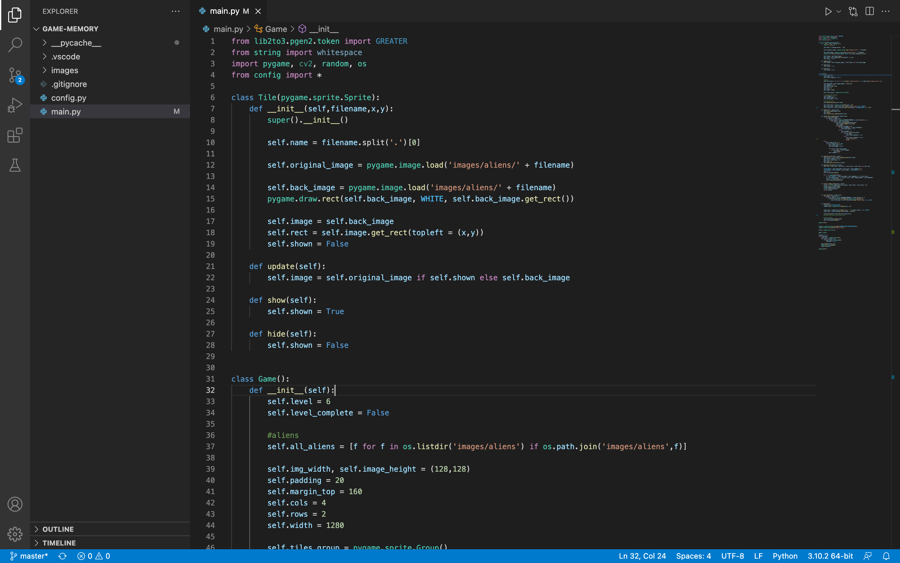

Celebrity memory game
We, Sophie M, Sophie H, Olivia, and Cilia decided to create a fun, modern memory game for you to enjoy. We assume that all of you have played memory before, and we thought this well-known childhood game could bring you back in time. You can find the rules and instructions down below.
Components on computer:
Field of 28 squares
14 pictures of celebrities
Object of the game:
Find the most pairs of matching pictures of celebrities.
Rules of the game:
The eldest gets to go first because our game is ☼different☼
Instructions on how to play:
On your screen you see a field of squares. The eldest player goes first.
Players take turns to click on two squares to see if they have a match.
If the pictures that appear are a match the player can take another go.
If the pictures clicked aren’t of the same celebrity, it’s the next person’s go.
Try to remember which celebrity picture is where.
game continues until all pictures have been matched.
Make sure to keep count of how many pairs you got.
The player with the most pairs of matching pictures wins.
Solo Play: Is a good practice for developing concentration and memory skills.
Count the number of turns it takes you to match them al
Try to improve with each game you play.
Documentation:
Downloaded visual studio code
Decided to try coding a memory game with celebrity pictures
Created a repository
Chose the celebrity pictures and cropped them into the right size
Searched YouTube videos or websites that explain what we have to do
Found a YouTube video and started to copy code
Mr. De Capitani informed us that it would not be wise to use said code as
it was too complicated and helped us develop a new and improved code
The code worked!
Added a little bit of spice to the game: made it more interesting (added the pictures)
Wrote website for documentation
